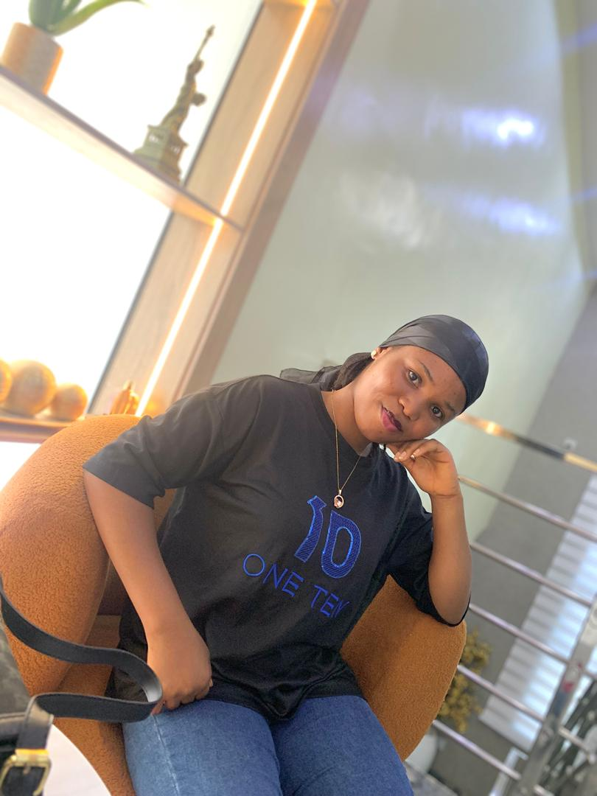

Computer Science Student
I’m Awokunle Tosin Mary by name, studying Computer Science in Federal University Oye Ekiti, Ekiti State with Matric Number CSC/2023/81053. I'm a passionate about web development and emerging technologies.